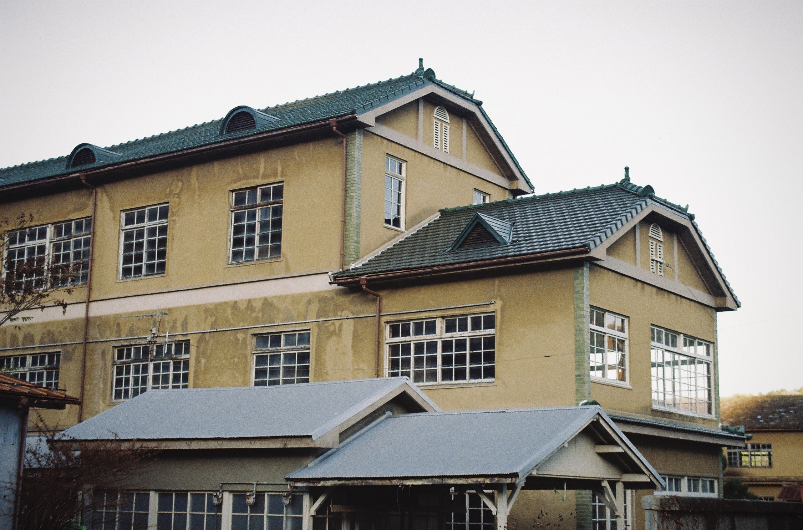
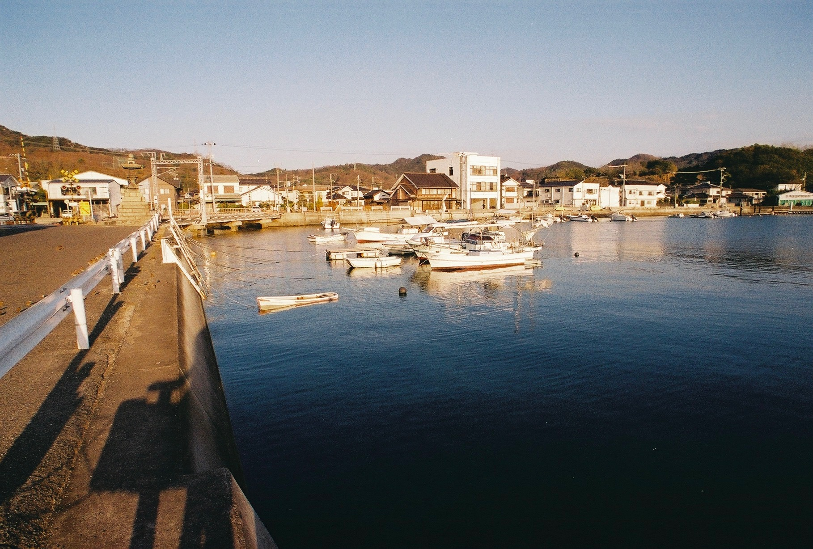
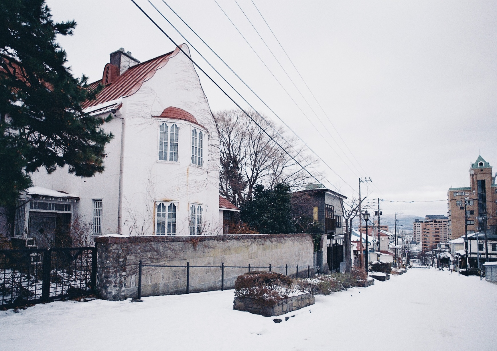

プロフィール:
幼少期よりクラシックギターを習う。高校時代にジャズに
出会い、大学進学をきっかけに移り住んだ北海道にて作曲
理論を学ぶ。 趣味は街並み写真の撮影。広島県呉市在住。
----------------------------------------------------
参加サークル:
音楽) The Nudja Conspiracy
写真) 港燈社
----------------------------------------------------






Discography
Photo

Release: 2026.4
Artwork: nedoco
Music:
A.Saxophone. 初吹音 さき
Trumpet. 荒谷 響
Vocal. 媛香
Guitar. Podzol
Drums. 中野渡 拓実
Piano. tanigon
Bass. Sidran
Programmings. Quong
2026.04.26 ...M3-2026春に参加します。
2026.03.27 ...オリジナル曲「フィルムパトローネ feat.花隈千冬」を投稿しました。
2026.02.22 ...東京コミティア155に参加しました。
2025.10.26 ...M3-2025秋に参加しました。
2025.04.27 ...M3-2025春に参加しました。
2025.01.26 ...The Nudja Conspiracy の公式Twitterを開設しました。
今後の予定 〜調整中〜
準備中
ご依頼・ご相談
Email: nudjataro (a) gmail.com
SNS:
X(Twitter)
Bluesky